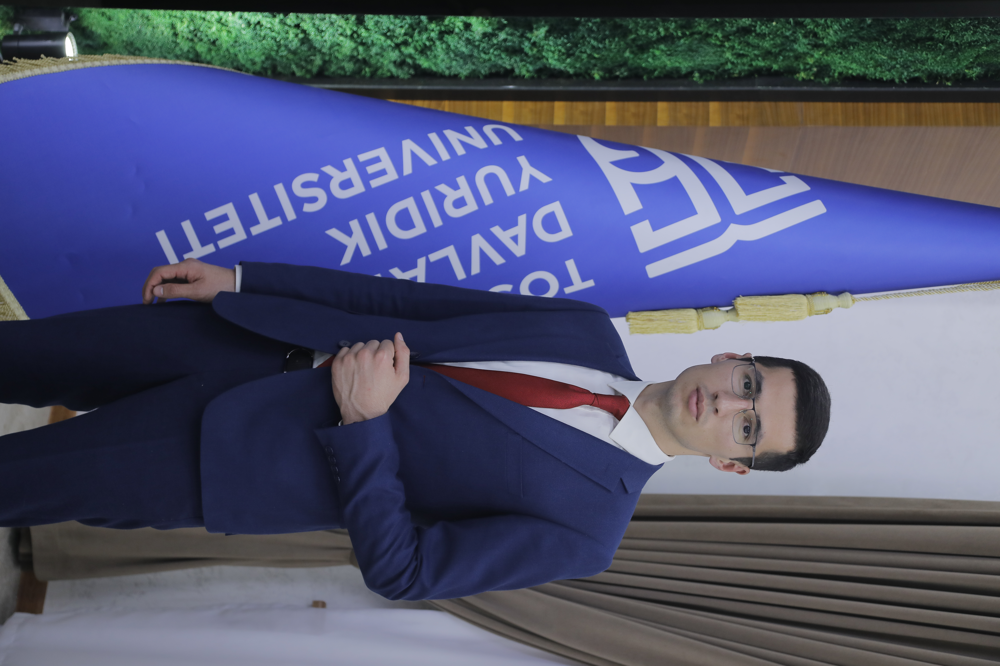

Yan Advokatlik Firmasi taqdim etadi
Advokat ofisida soatlab navbat kutish, qimmat narxlar va qog'ozbozlikka chek qo'ying. Yuqori dasturchi tafakkuri va professional advokatlar tajribasiga asoslangan maxsus algoritm yordamida da'vo arizalarini 1 daqiqada tayyorlab oling.
Muvaffaqiyatli ishlar
Uzluksiz yordam
Maxsus algoritm
Oliy yuridik amaliyot
Rasmiy litsenziya
Sichqonchani kartalar ustiga olib boring
Aliment, yashash joyi, MIB yoki ajrashish bo'yicha Sud arizalarini bot orqali rasman tayyorlang.
Uyingizdan chiqmagan holda, o'zingiz uchun qulay bo'lgan vaqtda yetakchi advokatlarimiz bilan videokonsultatsiya o'tkazing.
Sizning huquqlaringiz buzilyaptimi? Tajribali advokatlarimiz ishni to'liq qabul qilib, sudda bevosita himoya qilishadi.
"Huquqda" platformasi "YAN LEGAL FIRM" MChJ advokatlik firmasining mualliflik IT-yuridik loyihasi hisoblanadi.
Biz nafaqat hujjat tayyorlaymiz, balki insonlar taqdiri yechimida ijtimoiy ko'makchi vazifasini ham bajaramiz. Bizda narxlar adolatli, yondashuv esa professionallikka asoslanadi.

Telegram orqali @huquqdabot ga kiring va ro'yxatdan o'ting.
O'zingizga kerakli xizmatni tanlab, qisqacha ma'lumotlarni kiriting.
Click yoki Payme orqali shaffof va havfsiz tarzda onlayn to'lov qiling.
Tayyor rasmiy Word hujjatni yoki Advokat bilan aloqani qo'lga kiriting!
1 daqiqa ichida birinchi arizangizni yarating yoki bepul maslahatlarimizdan baxramand bo'ling.
Telegram Botga O'tish